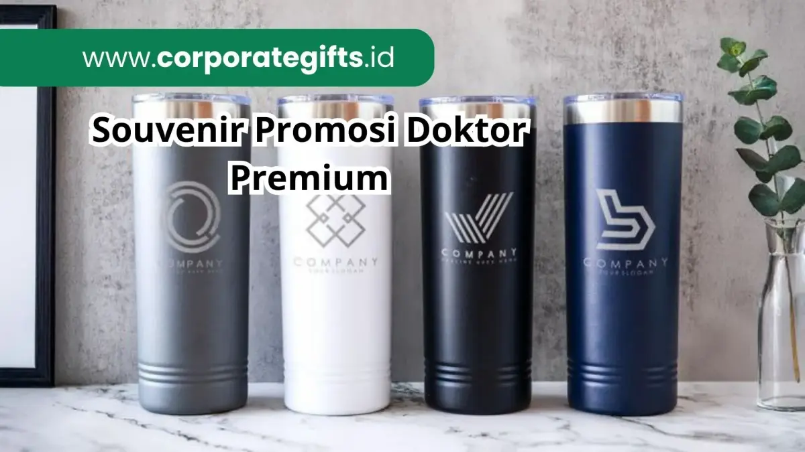

Corporate Gifts ID - Souvenir promosi doktor adalah hadiah premium yang diberikan pada acara sidang promosi doktor atau wisuda pascasarjana sebagai simbol apresiasi atas pencapaian akademik tertinggi, sekaligus media branding bagi universitas atau fakultas. Gelar doktor merupakan tonggak luar biasa dalam dunia akademik yang diraih melalui penelitian panjang, dedikasi intelektual, dan kontribusi nyata bagi ilmu pengetahuan. Oleh sebab itu, momen sidang promosi terbuka ini pantas dirayakan secara istimewa dan bermartabat.
Poin Kunci Souvenir Promosi Doktor:
- Penghargaan Tertinggi: Menjadi wujud rasa hormat dan terima kasih mendalam kepada promotor, ko-promotor, dewan penguji, dan tamu kehormatan.
- Standar Material VIP: Memprioritaskan bahan mewah seperti kristal optik K9, kulit sintetis premium PU/genuine leather, dan logam kuningan etsa.
- Personalisasi Presisi: Dilengkapi ukiran laser grafir nama lengkap beserta gelar akademik dan logo almamater kampus.
- Fungsional & Bergaya: Kombinasi plakat kenang-kenangan dengan barang esensial riset seperti pulpen rollerball dan notebook agenda kulit.
Makna Penting Souvenir dalam Sidang Promosi Doktor
Salah satu bentuk penghormatan yang paling lazim dalam tradisi akademik adalah pemberian cinderamata atau souvenir promosi doktor. Souvenir ini bukan sekadar hadiah seremonial biasa, melainkan media representasi prestise ilmiah yang memperkuat identitas universitas dan membina hubungan kekeluargaan akademik jangka panjang.
Dengan memilih souvenir custom VIP yang tepat, suasana sidang terbuka akan terasa jauh lebih khidmat, profesional, dan memberikan kesan mendalam bagi seluruh hadirin.
Mengapa Souvenir Promosi Doktor Begitu Krusial?
Pemberian souvenir pada sidang doktoral membawa nilai filosofis dan strategis yang sangat besar bagi penyelenggara maupun sang promovendus:
- Simbol Apresiasi & Rasa Hormat: Souvenir menjadi media bagi promovendus dan institusi untuk menyampaikan terima kasih atas bimbingan intensif para guru besar, promotor, dan dosen penguji selama bertahun-tahun masa studi.
- Media Branding Akademik Bergengsi: Bagi universitas atau fakultas, souvenir berfungsi layaknya merchandise korporat tingkat tinggi. Logo dan nama lembaga yang terukir elegan pada item berkualitas tinggi memperkokoh reputasi akademik di mata kolega nasional maupun internasional.
- Kenangan Abadi (Timeless Keepsake): Karena dirancang dengan standar kualitas tinggi dan material tahan lama, cinderamata promosi doktor akan dipajang atau digunakan terus-menerus di ruang kerja para akademisi.
Rekomendasi Souvenir Premium & Berkelas
Memberikan souvenir pada acara sidang promosi doktor tidak boleh sembarangan. Diperlukan kurasi material berbobot yang memancarkan wibawa intelektual:
- Plakat Kristal atau Trofi Laser 3D: Plakat kristal optik bening dengan ukiran laser 3D di bagian dalam atau plakat kayu kombinasi etsa kuningan menjadi pilihan utama untuk dipajang di lemari penghargaan dewan promotor.
- Set Pulpen Logam Rollerball Grafir: Pulpen berbahan logam solid dengan ukiran laser nama dan gelar dosen penguji sangat menonjolkan sisi intelektual serta menjadi alat tanda tangan dokumen riset yang berkelas.
- Bookmark Logam atau Kulit Eksklusif: Pembatas buku berbahan logam kuningan berukir atau kulit asli berdesain minimalis sangat cocok bagi para akademisi yang akrab dengan literatur ilmiah harian.
- Tote Bag Kulit atau Kanvas Premium: Tote bag kanvas tebal dengan aksen kulit dan bordir logo almamater menghadirkan kepraktisan membawa berkas jurnal saat menghadiri simposium.
- Dompet Kartu Nama & Pouch Kulit: Card wallet kulit multifungsi sangat menunjang penampilan profesional saat bertukar kartu nama di forum konferensi internasional.

Kombinasi plakat kristal grafir nama, pulpen metal eksekutif, dan agenda kulit dalam hardbox beludru memberikan apresiasi bernilai tinggi bagi dewan penguji.
Pilihan Souvenir Fungsional & Praktis
Selain barang cinderamata display, banyak universitas dan keluarga doktor kini mengombinasikannya dengan item fungsional harian:
- Tumbler Stainless Steel SUS304: Botol minum tumbler vacuum insulated berlogo grafir mendukung gaya hidup sehat dan menjaga suhu kopi panas hingga 12 jam saat sesi bimbingan mahasiswa.
- Buku Agenda Kulit Hardcover: Agenda kerja berbahan PU leather dengan kertas gading berkualitas tinggi untuk mencatat gagasan penelitian masa depan, jadwal kuliah, dan roadmap pengabdian masyarakat.
- Powerbank Fast Charging Eksekutif: Powerbank berbalut kulit atau casing logam dengan kapasitas 10.000 mAh menjadi penyelamat gadget saat bepergian dinas atau riset lapangan.
- Gantungan Kunci Logam Medali: Gantungan kunci logam die-cast berlogo lambang universitas dalam kotak beludru kecil sebagai cinderamata pendamping yang ringkas namun sarat makna.
Tips Memilih Souvenir Promosi Doktor yang Tepat
Agar paket cinderamata yang disiapkan memberikan kesan maksimal dan tidak mubazir, terapkan empat langkah kurasi berikut:
- Segmentasi Penerima: Bedakan paket hadiah untuk dewan promotor utama (paket VIP hardbox lengkap plakat kristal) dengan souvenir apresiasi untuk tamu undangan umum atau kolega rekanan (tumbler atau set notebook).
- Sisipkan Unsur Disertasi: Anda dapat menambahkan kutipan singkat intisari disertasi atau judul penelitian di bagian dalam gift box atau kartu ucapan apresiasi.
- Utamakan Personalisasi Nama: Pastikan ejaan nama, gelar akademik (Prof., Dr., Ph.D.), dan nama institusi terukir tanpa kesalahan ketik (zero typo).
- Pilih Kemasan Hardbox Mewah: Kemasan rigid box berpita satin dengan bantalan busa beludru presisi akan meningkatkan persepsi nilai cinderamata secara instan.
Tabel Rekomendasi Souvenir Akademik Berdasarkan Audiens
Berikut panduan komparasi kurasi souvenir promosi doktor yang dapat disesuaikan dengan anggaran dan target penerima:
| Target Penerima | Rekomendasi Item Souvenir | Jenis Personalisasi | Format Kemasan |
|---|---|---|---|
| Promotor & Ko-Promotor | Plakat Kristal Optik 3D + Set Pulpen Metal Rollerball + Card Holder Kulit. | Laser Grafir Nama, Gelar, dan Ucapan Dedikasi. | Rigid Hardbox Magnetik Beludru Maroon/Navy. |
| Dewan Penguji / Oponen Ahli | Plakat Akrilik Tebal / Etsa Kuningan + Tumbler Stainless SUS304. | Laser Nama Dosen & Logo Fakultas. | Hardbox Busa EVA Presisi + Kartu Ucapan. |
| Kolega Dosen & Rekan Kerja | Buku Agenda Kulit PU A5 + Pulpen Promosi Logam. | Deboss Logo Almamater & Grafir Nama Acara. | Sleeve Box Kraft Elegan berpita. |
| Tamu Undangan Sidang Terbuka | Tote Bag Kanvas Premium + Bookmark Logam / Flashdisk Kartu. | Print UV / Sablon Monokrom Logo Kampus. | Pouch Spunbond Ramah Lingkungan. |
Merayakan pencapaian gelar tertinggi melalui pemberian corporate gift eksklusif bukan sekadar formalitas seremonial, melainkan wujud apresiasi yang tulus dan berkelas. Dengan menggandeng vendor pengadaan terpercaya, seluruh kebutuhan souvenir sidang terbuka promosi doktor dapat terwujud dengan standar estetika tertinggi.
Pertanyaan Seputar Souvenir Promosi Doktor (FAQ)

Ditulis oleh: Arinda Zakia
Senior Corporate Gifting SpecialistSpesialis kurasi hadiah korporat dan cinderamata akademik di CorporateGifts.ID. Berpengalaman lebih dari 7 tahun membantu universitas terkemuka dan korporasi menyusun cinderamata eksklusif bernilai historis dan prestisius.
Lihat Profil Lengkap & Panduan Lainnya